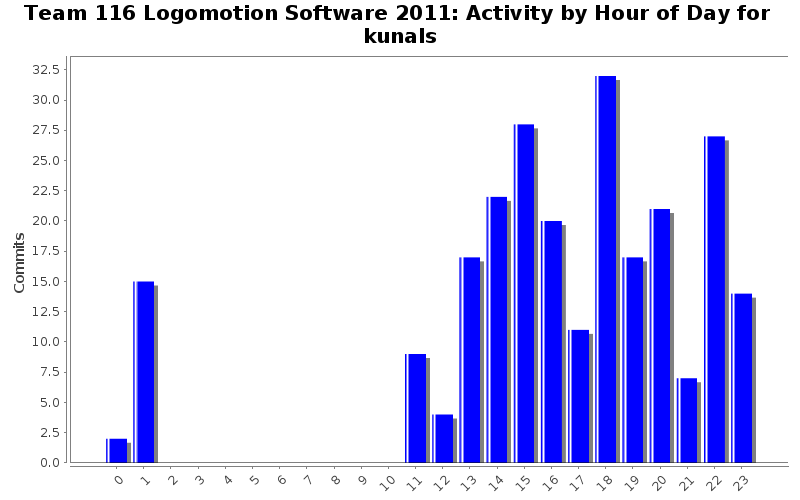
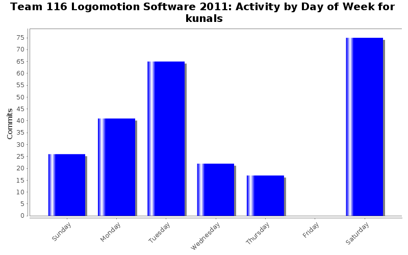

| Directory | Changes | Lines of Code | Lines per Change |
|---|---|---|---|
| / | 246 (100.0%) | 2892 (100.0%) | 11.7 |
Added automatic shifting code to TeleopPeriodic and AutonomousPeriodic.
I wrote a Mobility::process_automatic_shifting() function that checks the speeds of both motors and shifts accordingly. It runs in TeleopPeriodic and AutonomousPeriodic, so we should not have to modify our code in order to get the automatic shifting ability.
18 lines of code changed in 3 files:
Multiplied the Joystick->GetY() values by -1 because the Joysticks are giving us negative values for forwards
7 lines of code changed in 2 files:
Changed all printf() statements in the BackupAutonomous to Log::write() statements
17 lines of code changed in 3 files:
Ported some of my Autonomous code from last year into BackupAutonomous
196 lines of code changed in 3 files:
Commented out Driver Stow toggling from DS.cpp and fixed build errors I introduced in Elevator.cpp on accident
5 lines of code changed in 2 files:
Converted all tabs to spaces and fixed @todo statements so that Doxygen will recognize them
394 lines of code changed in 13 files:
Added driver stow toggling and refactored Elevator processing and Arm processing to their own functions in DS::process_elevator() and DS::process_arm()
23 lines of code changed in 2 files:
Added code to DS::process() to call Autonomous macros through DS::execute_macro() function
8 lines of code changed in 2 files:
Wrote DS::process_end_effector() function
A lot of changes need to be made to files so that DS::process_end_effector() could be written. I added IO constants for the Elevator button. Added a bunch of todos in the DS::process_end_effector() function asking for more information to confirm whether the right actions are being taken on the right inputs. Added a Grabber pointer to the DS constructor. Added comments for EndEffector::spin_rollers(). Added commented code DS::execute_macro() that can be uncommented when the Autonomous interface is complete.
68 lines of code changed in 5 files:
Log constructor and destructor now writes a timestamp to the file for easier tracking
9 lines of code changed in 1 file:
Fixed build errors in MinibotDeployment.cpp and added checks in MinibotDeployment::deploy_minibot() to make sure the alignment system is deployed and that we release the stabilization system prior to deploying the actual minibot
12 lines of code changed in 1 file:
Fixed build errors in DS.cpp
5 lines of code changed in 1 file:
Added debug messages for Compressor
2 lines of code changed in 1 file:
Fixed comment alignment in IO.h
2 lines of code changed in 1 file:
Fixed build errors in MinibotDeployment yet again
4 lines of code changed in 2 files:
Changed change_volts_to_digits function to follow the Style Guide
6 lines of code changed in 1 file:
Added a lot of newlines to log writes.
18 lines of code changed in 6 files:
Changed some things for debugging
7 lines of code changed in 3 files:
Changed all the DriverStation channels to match the unpublished OI Pinout
22 lines of code changed in 2 files:
Add comments noting the slot and channel according to the Hardware Pinout
39 lines of code changed in 3 files:
(72 more)